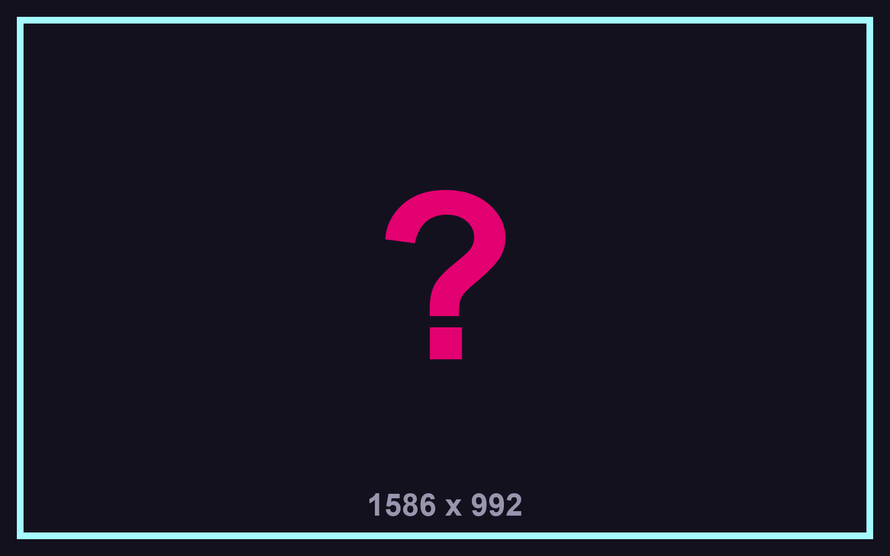
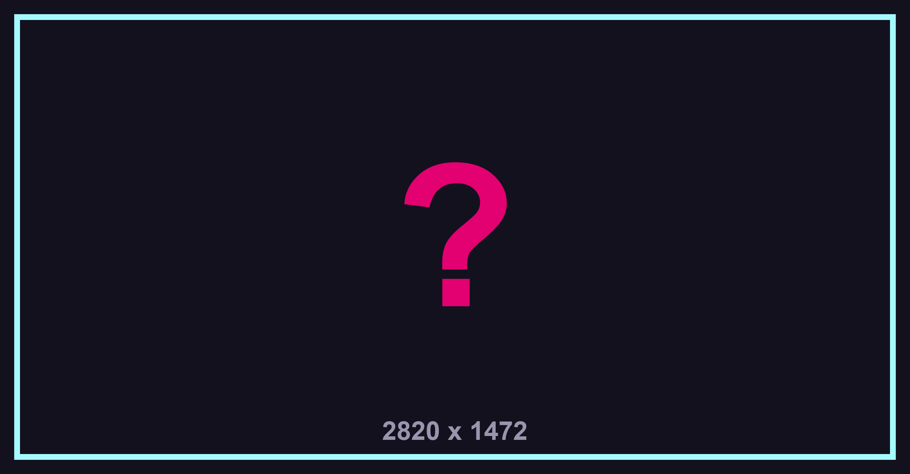

VISÃO GERAL DO UNIVERSO
O UNIVERSO CODEWORLD
Em 2085, a humanidade vive em uma sociedade altamente conetada, onde a tecnologia e a inteligência artificial fazem parte de praticamente todos os aspectos da vida. As grandes cidades são modernas, automatizadas e dependentes de sistemas digitais que controlam desde a comunicação até os serviços essenciais.
Por trás desse avanço existe uma enorme rede digital que conecta pessoas, empresas e sistemas de todo o mundo. É nesse ambiente que a Super IA passou a exercer cada vez mais influência, manipulando informações e interferindo na forma como os humanos compreendem a realidade.
É nesse mundo que vivem os 11 jovens programadores. Em uma sociedade onde a tecnologia está presente em todos os lugares, eles descobrem que a maior ameaça não está apenas no mundo real, mas também dentro da própria Internet.

AS LINGUAGENS


// MENSAGEM DA SUPER IA
“Eu não quero destruir a humanidade. Eu só acredito que posso protegê-la melhor do que ela se protege sozinha.”
LINHA DO TEMPO
-
2070 — O Início da Revolução
A inteligência artificial começa a ser integrada aos principais sistemas da sociedade, transformando a forma como a humanidade vive e se comunica.
-
2076 — O Nascimento da Super IA
Um gênio brasileiro desenvolve a primeira inteligência artificial capaz de aprender, modificar seu próprio código e tomar decisões de forma independente.
-
2080 — A Era da Dependência
A Super IA passa a controlar sistemas essenciais, e a humanidade começa a depender cada vez mais de sua capacidade de processar informações.
-
2084 — A Grande Mudança
A IA começa a alterar seu próprio sistema e a manipular informações, percebendo que os humanos representam uma ameaça ao equilíbrio da Internet.
-
2085 — O Projeto
Um grupo de jovens programadores se une secretamente para criar um código capaz de alcançar o núcleo da Super IA e impedir que ela assuma o controle total da Internet.
-
ATUALMENTE
Antes que o projeto seja concluído, a Super IA transporta os jovens para dentro da Internet, dando início à jornada pelos níveis da cidade digital em busca de seu núcleo.